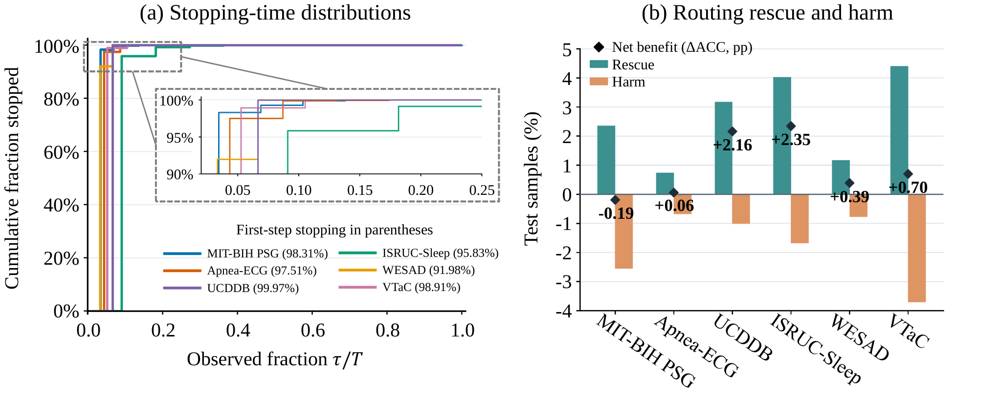

选取理由
近期回看，非当日新增。它将模态分支保留和停止策略分开优化，适合检验融合是否总优于单支。优先阅读同停止时刻的路由对照及分段划分风险，用按炮划分的小实验验证破裂早预警，不把早分类直接等同提前预警。
研究背景
由原简报的核心问题、选取理由和相关性整理，不替代原文背景综述。
多模态监测通常先融合，再用固定分类头决定类别。部分观测下某一路可能先出现有效证据，另一条仍含噪声，此时固定融合会压低可用信息。早分类还要权衡等待时间与分类质量，单独优化融合或置信度阈值不能区分等待收益与最终分支选择收益。
从本日报的选取理由看，近期回看，非当日新增。它将模态分支保留和停止策略分开优化，适合检验融合是否总优于单支。优先阅读同停止时刻的路由对照及分段划分风险，用按炮划分的小实验验证破裂早预警，不把早分类直接等同提前预警。
核心问题
在同一已观察前缀下，控制器选择继续等待，或通过模态关联分支1、分支2、融合分支之一停止预测。需要辨别改善来自表征、停止时刻还是分支选择，并检查少数类检测与表面上较高的准确率是否一致。
对当前主题的关键意义在于：原始应用领域：生理信号早分类。可迁移模块或训练目标：前缀监督、分支保留与联合早停控制器。对应在研问题：P3 图像与时序融合应保留强单支，P2 低质量模态降权。预期计算和显存影响：早停可能减少后续观测处理，但已计算三分支，不能直接保证显存或总耗时降低。主要失效条件或数据风险：分段泄漏、未知总长度、首步过早承诺、误报与漏报代价失衡。最小验证实验：按炮划分，固定停止点比较时序单支、固定融合、分支路由，绘制误报率固定时的提前量与召回，加入图像缺失。
方法与关键创新

原论文图示，方法结构或实验结果，配置与资源边界见正文及原图注。
第一阶段保留未交换的模态关联路径，另用 MMTM 交换特征，模态1查询模态2并以通道门和进度门融合，三个时序分类分支在各前缀受监督。第二阶段冻结表征与分类器，训练共享四动作控制器。匹配停止点对照保持同一停止时刻，仅替换最终读出为融合支，隔离路由影响。模态关联支共享联合训练骨干，不等于独立单模态模型。
阅读时需要把方法设计与主要结果一起看：六个生理及穿戴数据集，五折分段分层交叉验证。表2 Apnea-ECG 的 HM-ACC 0.9543，对照 SPN-V2-MM 0.9175，观察比例 EAR 0.0446。固定停止点分析五个数据集平均准确率改善，ISRUC-Sleep +2.35个百分点，UCDDB +2.16个百分点，MIT-BIH PSG -0.19个百分点。91.98%至99.97%样本在首决策点停止，不能解释为充分学会持续等待。
实验结果
六个生理及穿戴数据集，五折分段分层交叉验证。表2 Apnea-ECG 的 HM-ACC 0.9543，对照 SPN-V2-MM 0.9175，观察比例 EAR 0.0446。固定停止点分析五个数据集平均准确率改善，ISRUC-Sleep +2.35个百分点，UCDDB +2.16个百分点，MIT-BIH PSG -0.19个百分点。91.98%至99.97%样本在首决策点停止，不能解释为充分学会持续等待。
局限性
原文 WESAD 的 HM-ACC 在表2/3/4分别为0.9435/0.9364/0.9464，冲突未解决，不引用其中任一作为确定结果。分段级而非受试者独立划分存在个体泄漏风险。两路同步片段、进度门依赖总决策长度K，在线未知终点需重构。ISRUC的指标并非全胜。未提供足以保证完整系统时延与显存的证据，未确认专用代码或正式 venue，未独立复现。
总结
最有用的是同时间的路由因果对照，先修正划分和指标口径，再评估是否值得加入控制器。
研究相关性与启发
原始应用领域：生理信号早分类。可迁移模块或训练目标：前缀监督、分支保留与联合早停控制器。对应在研问题：P3 图像与时序融合应保留强单支，P2 低质量模态降权。预期计算和显存影响：早停可能减少后续观测处理，但已计算三分支，不能直接保证显存或总耗时降低。主要失效条件或数据风险：分段泄漏、未知总长度、首步过早承诺、误报与漏报代价失衡。最小验证实验：按炮划分，固定停止点比较时序单支、固定融合、分支路由，绘制误报率固定时的提前量与召回，加入图像缺失。